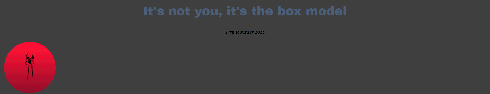
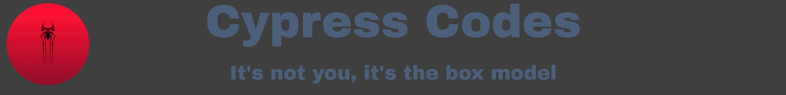

In this blog post i'll be sharing with you guys what ive learned about the
different positions used in css.
i'll be using my logo/home button for the examples.
relative
The relative position itself wont change much of anything it'll just keep what you have in the normal flow, but you can add properties like (top, bottom, left, right) to change its position on the screen which will include overlapping other elements
Here you can see its just fitting itself into the natural order
Absolute
This one is a little more janky, Instead of sitting in the natural flow of everything it'll create its own flow completely ignoring all the other elements, using the properties listed above also works differently. Instead of changing the position of where it is when things are normal. the distance changed will be from each of the containing elements sides.

In this one its where I want the logo to be but it will stay in that corner forever
Fixed
Fixed positions work similarly to Absolutes, It fixes the element to a visible portion of the view point that basically just means it'll stay on your screen even when you're scrolling away from it
Last of all I scrolled down a little bit and the logo followed me down which would've happened on your screen as well (unless you're on a phone)